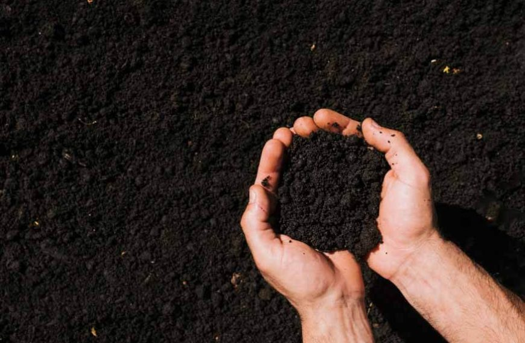

ABOUT SOILNUTRI AI
Simple soil intelligence for smarter farming.
The frontend brings image analysis, laboratory values, crop guidance and farm history into one easy-to-use portal.

The frontend brings image analysis, laboratory values, crop guidance and farm history into one easy-to-use portal.
